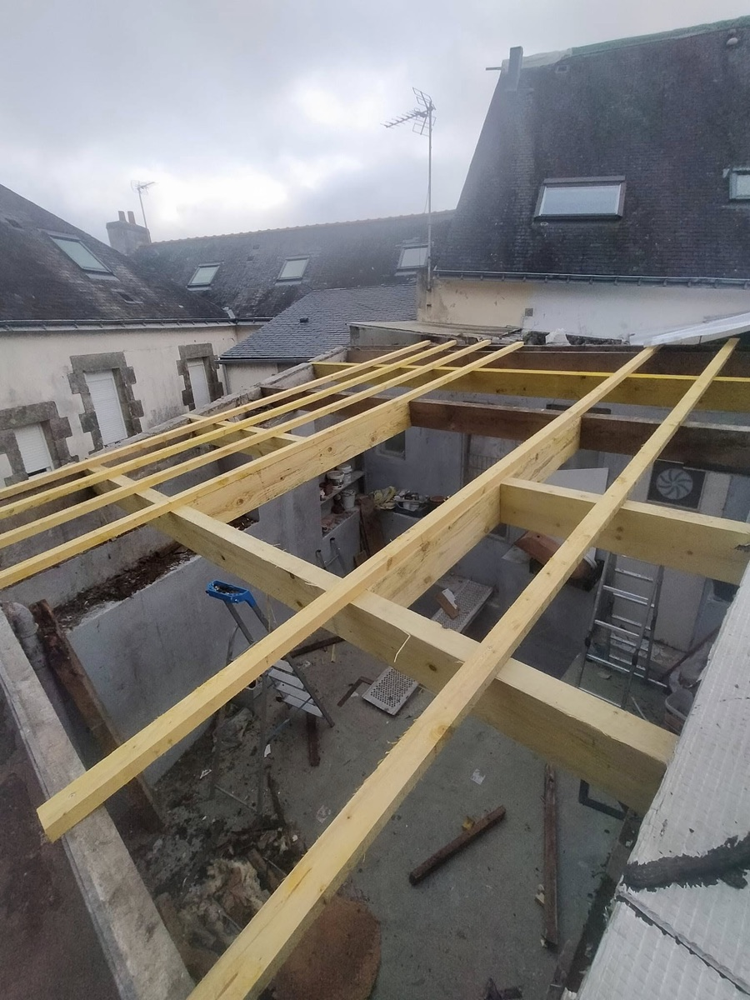
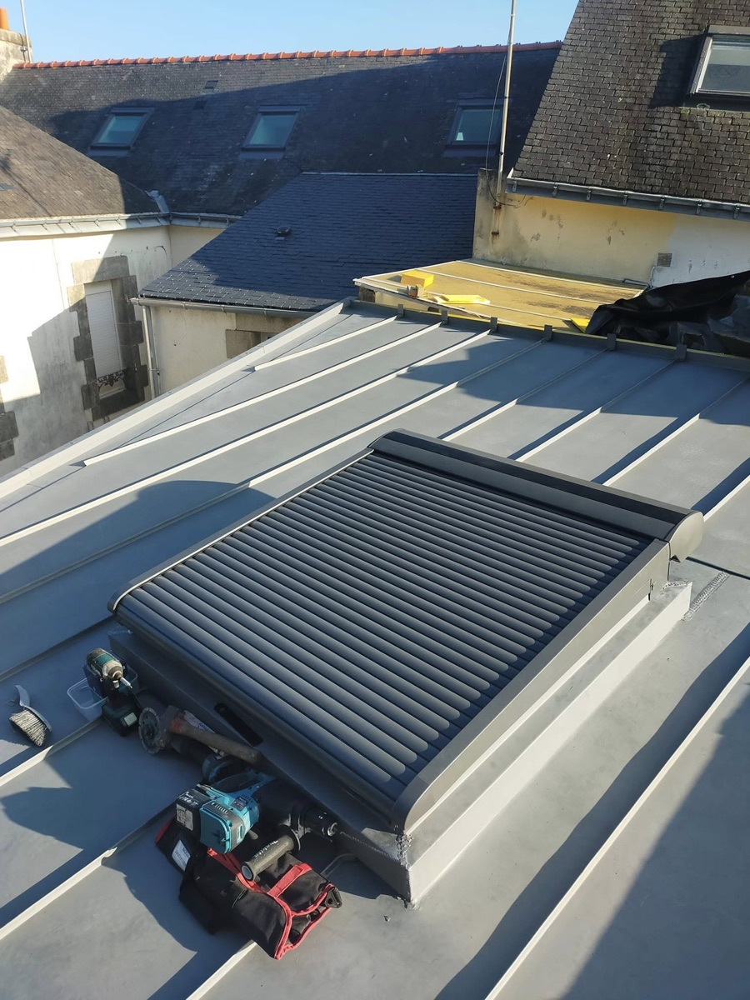

Abris-Toit-Ouest
Site vitrine multi-pages pour un artisan couvreur : couverture zinc & ardoise, nettoyage et hydrofuge, traitement charpente, pose Velux. Galeries avant/après documentées et urgence fuite 24h/7j.
Voir le projet
